TCP：连接的建立和终止
Table of Contents
TCP是一个面向连接的协议： 无论哪一方向另一方发送数据之前，都必须先在双方之间建立一条连接
这种两端间连接的建立与无连接协议如UDP不同，一端使用UDP向另一端发送数据报时，无需任何预先的握手
连接的建立与终止
为了了解一个TCP连接在建立及终止时发生了什么，在系统svr4上键入下列命令：
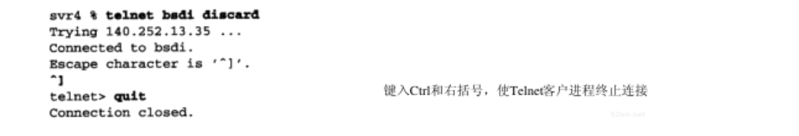
telnet命令在与丢弃(discard)服务对应的端口上与主机bsdi建立一条TCP连接。这服务类型正是需要观察的一条连接建立与终止的服务类型，而不需要服务器发起任何数据交换
tcpdump的输出
图18-1显示了这条命令产生TCP报文段的tcpdump输出：
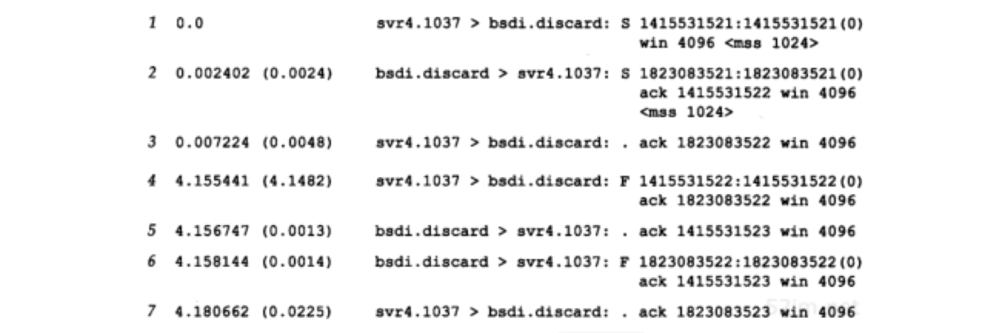
这7个TCP报文段仅包含TCP首部，没有任何数据。对于TCP段，每个输出行开始按如下格式显示：
源 > 目的 : 标志
这里的标志代表TCP首部中6个标志比特中的4个。下表显示了标志的5个字符的含义：
| 标志 | 3字符缩写 | 描述 |
| S | SYN | 同步序号 |
| F | FIN | 发送方完成数据发送 |
| R | RST | 复位连接 |
| P | PSH | 尽可能快地将数据发往接收进程 |
| . | 以上4个标志皆为0 |
在这个例子中，看到了 S 、 F 和 . 标志符。以后看到其他的两个标志（ R 和 P ）。TCP首部中的其他两个标志比特 ACK 和 URG ，tcpdump将作特殊显示。表中4个标志比特中的多个可能同时出现在一个报文段中，但通常一次只见到一个
RFC 1025将一种报文段称为Kamikaze分组Θ，在这样的报文段中有最大数量的标志比特同时被置为1（SYN,URG,PSH,FIN和1字节的数据）。这样的报文段也叫作nastygram,圣诞树分组，灯测试报文段
- 在第1行 1415531521:1415531521(0) : 分组的序号是1415531521，而报文段中数据字节数为0
- tcpdump显示这个字段的格式：
- 开始的序号
- 一个冒号
- 隐含的结尾序号
- 圆括号内的数据字节数
- 优点：便于了解数据字节数大于0时的隐含结尾序号
- 隐含的结尾序号只有在满足下面条件之一才显示 ：
- 报文段中至少包含一个数据字节
- SYN、FIN或RST被设置为1时才显示
- tcpdump显示这个字段的格式：
- 在第2行中 ack 1415531522 ：确认序号， 它只有在首部中的ACK标志比特被设置1时才显示
- 每行显示的字段 win 4096 : 发送端通告的窗口大小。例子中没有交换任何数据，所以窗口大小就维持默认情况下的4096
- 最后一个字段 <mss1024> ：由发送端指明的最大报文段长度选项。发送端将不接收超过这个长度的TCP报文段。这通常是为了避免分段
时序图
图18-3显示了这些分组序列的时间系列，这个图显示出哪一端正在发送分组：
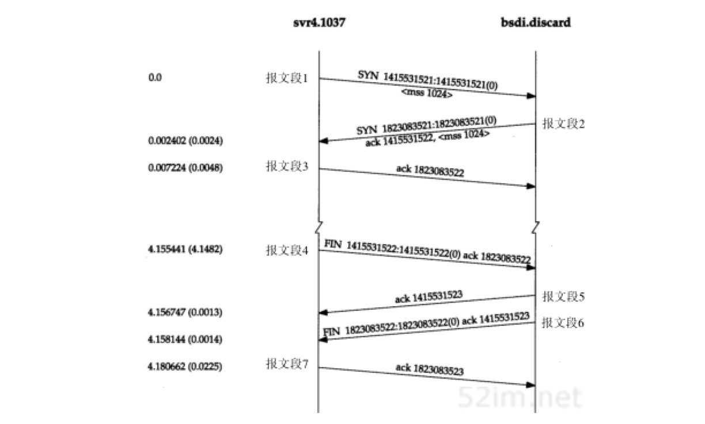
建立连接
为了建立一条TCP连接：
- 报文段1：请求端（通常称为客户）发送一个SYN段指明客户打算连接的服务器的端口，以及初始序号（ISN，在这个例子中为1415531521）
- 报文段2：服务器发回包含服务器的初始序号的SYN报文段（报文段2）作为应答。同时， 将确认序号设置为客户的ISN加1以对客户的SYN报文段进行确认，而且一个SYN将占用一个序号
- 报文段3：客户必须 将确认序号设置为服务器的ISN加1以对服务器的SYN报文段进行确认
发送第一个SYN的一端将执行主动打开。接收这个SYN并发回下一个SYN的另一端执行被动打开
当一端为建立连接而发送它的SYN时，它为连接选择一个初始序号。ISN随时间而变化，因此每个连接都将具有不同的ISN。RFC 793指出ISN可看作是一个32比特的计数器，每4ms加1。这样选择序号的目的在于 防止在网络中被延迟的分组在以后又被传送，而导致某个连接的一方对它作错误的解释
如何进行序号选择？ 在4.4BSD（和多数的伯克利的实现版）中，系统初始化时初始的发送序号被初始化为1 这个变量每0.5秒增加64000，并每隔9.5小时又回到0（对应这个计数器每8 ms加1，而不是每4 ms加1） 另外，每次建立一个连接后，这个变量将增加64000
报文段3与报文段4之间4.1秒的时间间隔是建立TCP连接到向telnet键入quit命令来中止该连接的时间
连接终止
建立一个连接需要三次握手，而终止一个连接要经过4次握手，这由TCP的半关闭造成的。 因为一个TCP连接是全双工（即数据在两个方向上能同时传递），因此每个方向必须单独地进行关闭 。这原则就是当一方完成它的数据发送任务后就能发送一个FIN来终止这个方向连接。当一端收到一个FIN，它必须通知应用层另一端已经终止了那个方向的数据传送。 发送FIN通常是应用层进行关闭的结果
收到一个FIN只意味着在这一方向上没有数据流动。一个TCP连接在收到一个FIN后仍能发送数据 而这对利用半关闭的应用来说是可能的，尽管在实际应用中只有很少的TCP应用程序这样做
首先进行关闭的一方（即发送第一个FIN）将执行主动关闭，而另一方（收到这个FIN）执行被动关闭。通常一方完成主动关闭而另一方完成被动关闭，但也可能双方都执行主动关闭
正常关闭过程如图18-3所示：
- 报文段4：发起终止连接，它由Telnet客户端关闭连接时发出。这在键入quit命令后发生。它将导致TCP客户端发送一个FIN，用来关闭从客户到服务器的数据传送
- 报文段5：当服务器收到这个FIN，它发回一个ACK，确认序号为收到的序号加1。 和SYN一样，一个FIN将占用一个序号
- TCP服务器还向应用程序（即丢弃服务器）传送一个文件结束符
- 报文段6：这个服务器程序就关闭它的连接，导致它的TCP端发送一个FIN
- 报文段7：客户必须发回一个确认，并将确认序号设置为收到序号加1
图18-4显示了终止一个连接的典型握手顺序。在这个图中，发送FIN将导致应用程序关闭它们的连接，这些FIN的ACK是由TCP软件自动产生的：
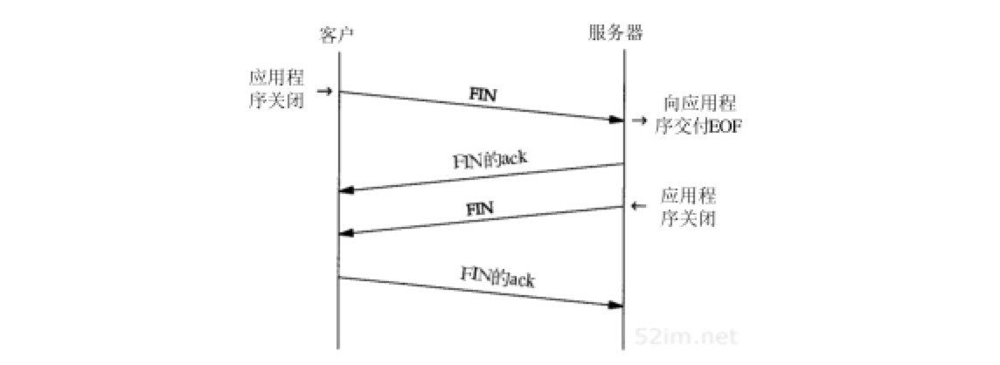
连接通常是由客户端发起的，这样第一个SYN从客户传到服务器。每一端都能主动关闭这个连接（即首先发送FIN）。然而，一般由客户端决定何时终止连接，因为客户进程通常由用户交互控制，用户会键入诸如“quit”一样的命令来终止进程。在图18-4中，我们能改变上边的标识，将左方定为服务器，右方定为客户，一切仍将像显示的一样工作
正常的tcpdump输出
对所有的数值很大的序号进行排序是很麻烦的，因此默认情况下tcpdump只在显示SYN报文段时显示完整的序号，而对其后的序号则显示它们与初始序号的相对偏移值
除非我们需要显示完整的序号，否则将在以下的例子中使用这种形式的输出显示：
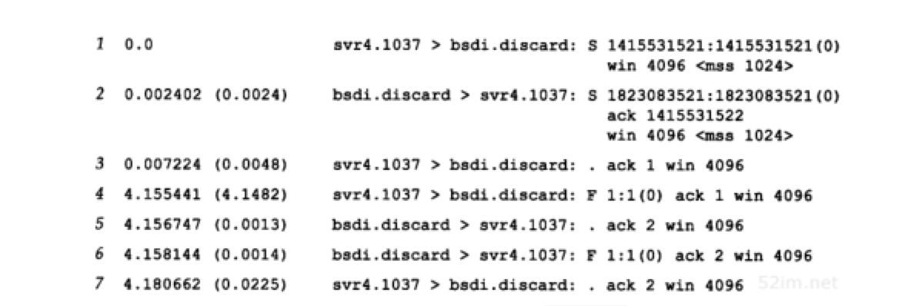
连接建立的超时
有很多情况导致无法建立连接。一种情况是服务器主机没有处于正常状态。为了模拟这种情况，我们断开服务器主机的电缆线，然后向它发出telnet命令。图18-6显示了tcpdump的输出:
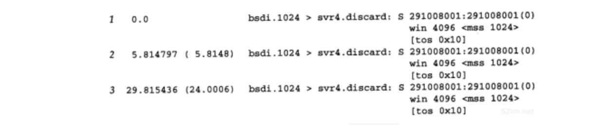
在这个输出中有趣的一点是客户间隔多长时间发送一个SYN，试图建立连接。第2个SYN与第1个的间隔是5.8秒，而第3个与第2个的间隔是24秒
这个例子运行38分钟后客户重新启动。这对应初始序号为291008001（约为38×60×64000×2） 曾经介绍过使用典型的伯克利实现版的系统将初始序号初始化为1，然后每隔0.5秒就增加64000 另外，因为这是系统启动后的第一个TCP连接，因此客户的端口号是1024
图18-6中没有显示客户端在放弃建立连接尝试前进行SYN重传的时间。为了了解它我们必须对telnet命令进行计时：
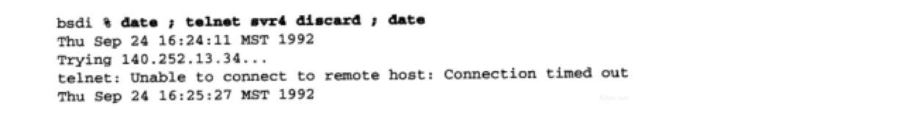
时间差值是76秒，这是因为大多数伯克利系统将建立一个新连接的最长时间限制为75秒
服务类型字段
在图18-6中，出现了符号 [tos 0x10]。这是IP数据报内的服务类型（TOS）字段。BSD/386中的Telnet客户进程将这个字段设置为最小时延
最大报文段长度
最大报文段长度(MSS)：TCP传往另一端的最大块数据的长度。当一个连接建立时，连接的双方都要通告各自的MSS。已经见过MSS都是1024。这导致IP数据报通常是40字节长：20字节的TCP首部和20字节的IP首部
它并不是任何条件下都可协商。当建立一个连接时，每一方都有用于通告它期望接收的MSS选项（ MSS选项只能出现在SYN报文段中 ）。如果一方不接收来自另一方的MSS值，则MSS就定为默认值536字节（这个默认值允许20字节的IP首部和20字节的TCP首部以适合576字节IP数据报）
一般说来，如果没有分段发生，MSS还是越大越好（这也并不总是正确）。报文段越大允许每个报文段传送的数据就越多，相对IP和TCP首部有更高的网络利用率。当TCP发送一个SYN时，或者是因为一个本地应用进程想发起一个连接，或者是因为另一端的主机收到了一个连接请求，它将MSS值设置为 外出接口上的MTU长度减去固定的IP首部和TCP首部长度 。对于一个以太网，MSS值可达 1460字节 。使用IEEE 802.3的封装，它的MSS可达 1452字节
在本章见到的涉及BSD/386和SVR4的MSS为1024，这是因为许多BSD的实现版本需要MSS为512的倍数 其他的系统，如SunOS 4.1.3、Solaris 2.2和AIX 3.2.2，当双方都在一个本地以太网上时都规定MSS为1460 以太网上1460的MSS在性能上比1024的MSS更好
如果目的IP地址为“非本地的”，MSS通常的默认值为 536 。而区分地址是本地还是非本地是简单的，如果目的IP地址的网络号与子网号都和我们的相同，则是本地的；如果目的IP地址的网络号与我们的完全不同，则是非本地的；如果目的IP地址的网络号与我们的相同而子网号与我们的不同，则可能是本地的，也可能是非本地的。大多数TCP实现版都提供了一个配置选项，让系统管理员说明不同的子网是属于本地还是非本地。这个选项的设置将 确定MSS可以选择尽可能的大（达到外出接口的MTU长度）或是默认值536
MSS让主机限制另一端发送数据报的长度。加上主机也能控制它发送数据报的长度，这将使以较小MTU连接到一个网络上的主机避免分段
实例
考虑主机slip，通过MTU为296的SLIP链路连接到路由器bsdi上。图18-8显示这些系统和主机sun：
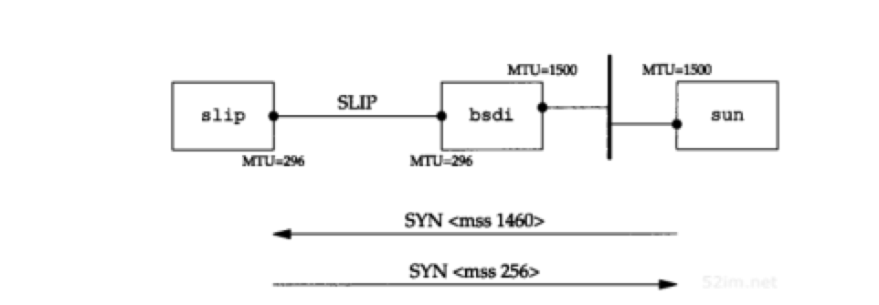
从sun向slip发起一个TCP连接，并使用tcpdump来观察报文段。图18-9显示这个连接的建立：
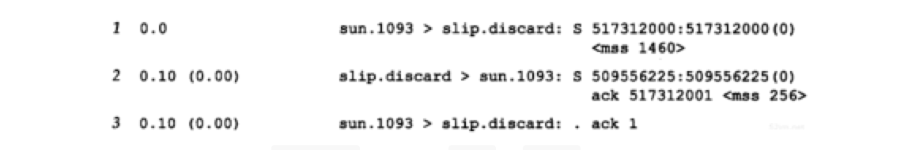
在这个例子中，sun发送的报文段不能超过256字节的数据，因为它收到的MSS选项值为256。此外，由于slip知道它外出接口的MTU长度为296，即使sun已经通告它的MSS为1460，但为避免将数据分段，它不会发送超过256字节数据的报文段。系统允许发送的数据长度小于另一端的MSS值
只有当一端的主机以小于576字节的MTU直接连接到一个网络中，避免这种分段才会有效 。如果两端的主机都连接到以太网上，都采用536的MSS，但中间网络采用296的MTU，也将会出现分段。使用路径上的MTU发现机制是关于这个问题的唯一方法
TCP的半关闭
TCP提供了连接的一端在结束它的发送后还能接收来自另一端数据的能力。这就是所谓的 半关闭 。正如早些时候提到的只有很少的应用程序使用它
为了使用这个特性，编程接口必须为应用程序提供一种方式来说明： 我已经完成了数据传送，因此发送一个文件结束（FIN）给另一端，但我还想接收另一端发来的数据，直到它给我发来文件结束（FIN）
如果应用程序不调用close而调用shutdown，且第2个参数值为1，则插口的API支持半关闭 然而，大多数的应用程序通过调用close终止两个方向的连接
图18-10显示了一个半关闭的典型例子：
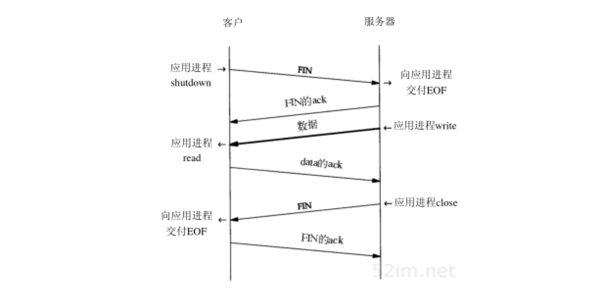
让左方的客户端开始半关闭，当然也可以由另一端开始。开始的两个报文段和图18-4是相同的：
- 初始端发出的FIN
- 另一端对这个FIN的ACK报文段，但后面就和图18-4不同，因为接收半关闭的一方仍能发送数据
- 一个数据报文段和一个ACK报文段，但可能发送了许多数据报文段
- 当收到半关闭的一端（右边）在完成它的数据传送后，将发送一个FIN关闭这个方向的连接， 这将传送一个文件结束符给发起这个半关闭的应用进程 （左边）
- 当对第二个FIN进行确认后，这个连接便彻底关闭了
用途
一个典型的例子是Unix中的rsh(1)命令，它将完成在另一个系统上执行一个命令
sun$ rsh bsdi sort < datafile
这将在主机bsdi上执行sort排序命令，rsh命令的标准输入来自文件datafile。rsh将在它与在另一主机上执行的程序间建立一个TCP连接。rsh的操作很简单：它将标准输入（datafile）复制给TCP连接，发送给bsdi主机，并将bsdi上的执行结果从TCP连接中复制给标准输出（sun主机的终端）。图18-11显示了这个建立过程：
在远端主机bsdi上，rshd服务器将执行sort程序，它的标准输入和标准输出都是TCP连接
请牢记TCP连接是全双工的，两边都可以互相发送数据
sort程序只有读取到所有输入数据后才能产生输出。所有的原始数据通过TCP连接从rsh客户端传送到sort服务器进行排序。当输入(datafile)到达文件尾时，rsh客户端执行这个TCP连接的半关闭。接着sort服务器在它的标准输入（TCP连接）上收到一个文件结束符，对数据进行排序，并将结果写在它的标准输出上（TCP连接）。rsh客户端继续接收来自TCP连接另一端的数据，并将排序的文件复制到它的标准输出上
没有半关闭，需要其他的一些技术让客户通知服务器，客户端已经完成了它的数据传送，但仍要接收来自服务器的数据 使用两个TCP连接也可作为一个选择，但使用半关闭的单连接更好
TCP的状态变迁图
已经介绍了许多有关发起和终止TCP连接的规则。这些规则都能从图18-12所示的状态变迁图中得出：
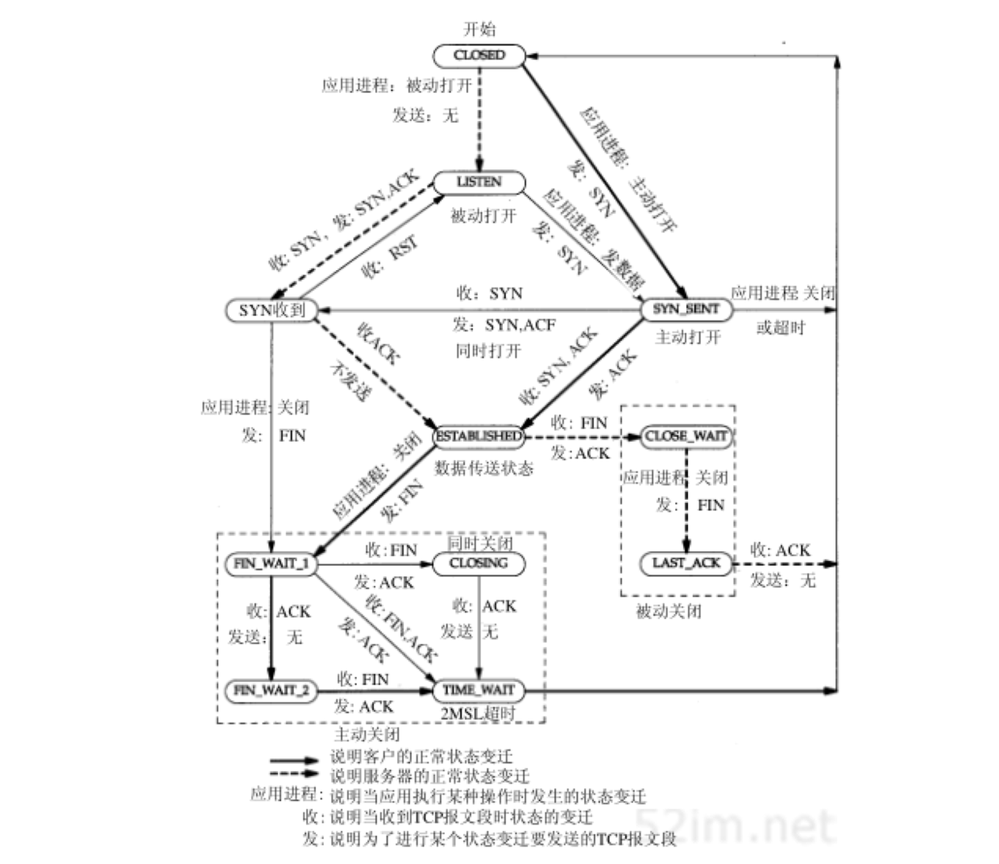
- 图中显示了一个典型的状态变迁的子集：用粗的实线箭头表示正常的客户端状态变迁，用粗的虚线箭头表示正常的服务器状态变迁
- 两个导致进入ESTABLISHED状态的变迁对应打开一个连接，而两个导致从ESTABLISHED状态离开的变迁对应关闭一个连接。 ESTABLISHED状态是连接双方能够进行双向数据传递的状态
- 图中左下角4个状态放在一个虚线框内，并标为 主动关闭
- 右下角两个状态(CLOSE_WAIT和LAST_ACK)也用虚线框住，并标为 被动关闭
- 图中11个状态(CLOSED，LISTEN，SYN_SENT等)是有意与netstat命令显示的状态名称一致：
CLOSED状态不是一个真正的状态，而是这个状态图的假想起点和终点。
- 从LISTEN到SYN_SENT的变迁是正确的，但伯克利版的TCP软件并不支持它
- 只有当SYN_RCVD状态是从LISTEN状态（正常情况）进入，而不是从SYN_SENT状态（同时打开）进入时，从SYN_RCVD回到LISTEN的状态变迁才是有效的。这意味着 如果收到一个SYN，发送一个带ACK的SYN（进入SYN_RCVD），然后收到一个RST，而不是一个ACK，便又回到LISTEN状态并等待另一个连接请求的到来
图18-13显示了在正常的TCP连接的建立与终止过程中，客户与服务器所经历的不同状态。它是图18-3的再现，不同的是仅显示了一些状态：

假定在图18-13中左边的客户执行主动打开，而右边的服务器执行被动打开。尽管图中显示出由客户端执行主动关闭，但和我们提到的一样，另一端也能执行主动关闭
可以使用图18-12的状态图来跟踪图18-13的状态变化过程，以便明白每个状态的变化
TIME_WAIT状态
TIME_WAIT状态也称为2MSL等待状态。每个具体TCP实现必须选择一个报文段最大生存时间MSL。它是任何报文段被丢弃前在网络内的最长时间。这个时间是有限的，因为TCP报文段以IP数据报在网络内传输，而IP数据报则有限制其生存时间的TTL字段
RFC 793指出MSL为2分钟。然而，实现中的常用值是30秒，1分钟，或2分钟
对一个具体实现所给定的MSL值，处理的原则是： 当TCP执行一个主动关闭，并发回最后一个ACK，该连接必须在TIME_WAIT状态停留的时间为2倍的MSL。这样可让TCP再次发送最后的ACK以防这个ACK丢失，被动关闭的另一端超时并重发最后的FIN
这种2MSL等待的结果： 这个TCP连接在2MSL等待期间，定义这个连接的插口（客户的IP地址和端口号，服务器的IP地址和端口号）不能再被使用 。这个连接只能在2MSL结束后才能再被使用
遗憾的是，大多数TCP实现强加了更为严格的限制。在2MSL等待期间，插口中使用的本地端口在默认情况下不能再被使用 某些实现和API提供了一种避开这个限制的方法：使用socket API时，可说明其中的SO_REUSEADDR选项 它将让调用者对处于2MSL等待的本地端口进行赋值，但TCP原则上仍将避免使用仍处于2MSL连接中的端口
在连接处于2MSL等待时，任何迟到的报文段将被丢弃。因为处于2MSL等待的、由该插口对定义的连接在这段时间内不能被再用，因此当要建立一个有效的连接时，来自该连接的一个较早替身的迟到报文段作为新连接的一部分不可能不被曲解（一个连接由一个插口对来定义。一个连接的新的实例称为该连接的替身）。
图18-13中客户执行主动关闭并进入TIME_WAIT是正常的。服务器通常执行被动关闭，不会进入TIME_WAIT状态。这暗示 如果终止一个客户程序，并立即重新启动这个客户程序，则这个新客户程序将不能重用相同的本地端口。这不会带来什么问题，因为客户使用本地端口，而并不关心这个端口号是什么
然而，对于服务器，情况就有所不同，因为服务器使用熟知端口。 如果终止一个已经建立连接的服务器程序，并试图立即重新启动这个服务器程序，服务器程序将不能把它的这个熟知端口赋值给它的端点，因为那个端口是处于2MSL连接的一部分。在重新启动服务器程序前，它需要在1~4分钟
2MSL实例
可以通过sock程序看到这一切。我们启动服务器程序，从一个客户程序进行连接，然后停止这个服务器程序：
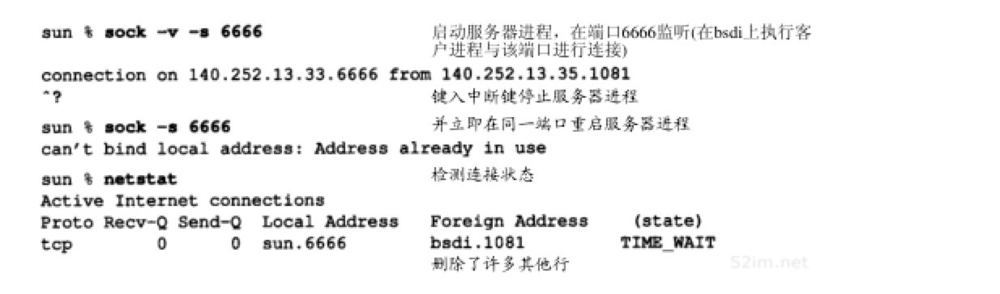
当重新启动服务器程序时，程序报告一个差错信息说明不能绑定它的熟知端口，因为该端口已被使用，实际上它处于 2MSL等待
如果我们一直试图重新启动服务器程序，并测量它直到成功所需的时间，就能确定出2MSL值
对于SunOS 4.1.3、SVR4、BSD/386和AIX 3.2.2，它需要1分钟才能重新启动服务器程序，这意味着它们的MSL值为30秒
对于Solaris 2.2，它需要4分钟才能重新启动服务器程序，这表示它的MSL值为2分钟
如果一个客户程序试图申请一个处于2MSL等待的端口（客户程序通常不会这么做），就会出现同样的差错：
- 第1次执行客户程序时采用 -v 选项来查看它使用的本地端口为1162
- 第2次执行客户程序时则采用 -b 选项来选择端口1162为它的本地端口
正如所预料的那样，客户程序无法那么做，因为那个端口是一个还处于2MSL等待连接的一部分
需要再次强调2MSL等待的一个效果： 和以前介绍的一样，一个插口对（即包含本地IP地址、本地端口、远端IP地址和远端端口的4元组）在它处于2MSL等待时，将不能再被使用 。尽管许多具体的实现中允许一个进程重新使用仍处于2MSL等待的端口（通常是设置选项SO_REUSEADDR），但TCP不能允许一个新的连接建立在相同的插口对上。可通过下面的试验来看到这一点：
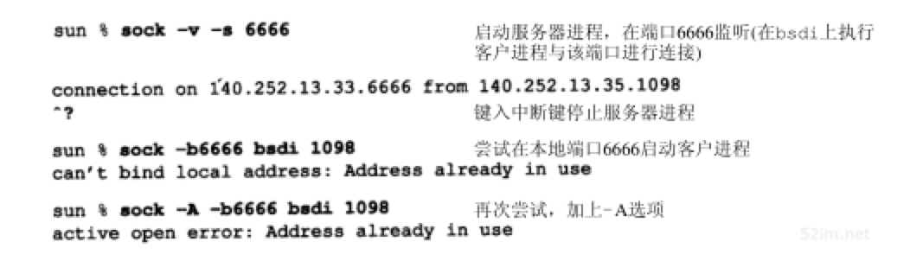
- 第1次运行sock程序中，将它作为服务器程序，端口号为6666，并从主机bsdi上的一个客户程序与它连接，这个客户程序使用的端口为1098。我们终止服务器程序，因此它将执行主动关闭。这将导致4元组140.252.13.33（本地IP地址）、6666（本地端口号）、140.252.13.35（另一端IP地址）和1098（另一端的端口号）在服务器主机进入2MSL等待
- 在第2次运行sock程序时，我们将它作为客户程序，并试图将它的本地端口号指明为6666，同时与主机bsdi在端口1098上进行连接。但这个程序在试图将它的本地端口号赋值为6666时产生了一个差错，因为这个端口是处于2MSL等待4元组的一部
- 为了避免这个差错，再次运行这个程序，并使用选项 -A 来设置前面提到的 SO_REUSEADDR 。这将让sock程序能将它的本地端口号设置为6666，但当我们试图进行主动打开时，又出现了一个差错。即使它能将它的本地端口设置为6666， 但它仍不能和主机bsdi在端口1098上进行连接，因为定义这个连接的插口对仍处于2MSL等待状态
如果试图从其他主机来建立这个连接会如何？首先我们必须在sun上以 -A 标记来重新启动服务器程序，因为它需要的端口6666是还处于2MSL等待连接的一部分：
sun$ sock -A -s 6666 #启动服务器程序，在端口6666监听
接着，在2MSL等待结束前，我们在bsdi上启动客户程序：
bsdi$ sock -b1098 sun 6666 connected on 140.252.13.35.1098 to 140.252.13.33.6666
不幸的是它成功了！这违反了TCP规范，但被大多数的伯克利版实现所支持。这些实现允许一个新的连接请求到达仍处于TIME_WAIT状态的连接，只要新的序号大于该连接前一个替身的最后序号。在这个例子中，新替身的ISN被设置为前一个替身最后序号与128000的和
对于同一连接的前一个替身，这个具体实现中的特性让客户程序和服务器程序能连续地重用每一端的相同端口号，但这只有在服务器执行主动关闭才有效
平静时间
对于来自某个连接的较早替身的迟到报文段，2MSL等待可防止将它解释成使用相同插口对的新连接的一部分。但这只有在处于2MSL等待连接中的主机处于正常工作状态时才有效
如果使用处于2MSL等待端口的主机出现故障，它会在MSL秒内重新启动，并立即使用故障前仍处于2MSL的插口对来建立一个新的连接吗？如果是这样，在故障前从这个连接发出而迟到的报文段会被错误地当作属于重启后新连接的报文段。无论如何选择重启后新连接的初始序号，都会发生这种情况
为了防止这种情况，RFC 793指出 TCP在重启动后的MSL秒内不能建立任何连接。这就称为平静时间
只有极少的实现版遵守这一原则，因为大多数主机重启动的时间都比MSL秒要长
FIN_WAIT_2状态
在FIN_WAIT_2状态已经发出了FIN，并且另一端也已对它进行确认。除非我们在实行半关闭，否则将等待另一端的应用层意识到它已收到一个文件结束符说明，并向我们发一个FIN来关闭另一方向的连接。只有当另一端的进程完成这个关闭，我们这端才会从FIN_WAIT_2状态进入TIME_WAIT状态。
这意味着 我们这端可能永远保持这个状态。另一端也将处于CLOSE_WAIT状态，并一直保持这个状态直到应用层决定进行关闭
许多伯克利实现采用如下方式来防止这种在FIN_WAIT_2状态的无限等待： 如果执行主动关闭的应用层将进行全关闭，而不是半关闭来说明它还想接收数据，就设置一个定时器。如果这个连接空闲10分钟75秒，TCP将进入CLOSED状态
复位报文段
已经介绍了TCP首部中的RST比特是用于 复位 的。一般说来，无论何时一个报文段发往基准的连接出现错误，TCP都会发出一个复位报文段
基准的连接是指由目的IP地址和目的端口号以及源IP地址和源端口号指明的连接，这就是为什么RFC 793称之为插口
向不存在的端口的连接请求
产生复位的一种常见情况是当连接请求到达时，目的端口没有进程正在听。对于UDP，以前看到这种情况，当一个数据报到达目的端口时，该端口没在使用，它将产生一个ICMP端口不可达的信息。而TCP则使用复位。使用telnet客户程序来指明一个目的端口没在使用的情况：
bsdi$ telnet svr4 20000 #端口20000未使用 Trying 140.252.13.34... telnet: Unable to connect to remote host: Connection refused
telnet客户程序会立即显示这个差错信息。图18-14显示了对应这个命令的分组交换过程：

需要注意的是复位报文段中的序号字段和确认序号字段：
ACK比特在到达的报文段中没有被设置为1，所以复位报文段中的序号被置为0 复位报文中的确认序号被置为进入的ISN加上数据字节数，尽管在到达的报文段中没有真正的数据，但SYN比特从逻辑上占用了1字节的序号空间。所以确认序号被置为ISN与数据长度(0)、SYN比特所占的1的总和
异常终止一个连接
终止一个连接的正常方式是一方发送FIN。有时这也称为 有序释放 ，因为在所有排队数据都已发送之后才发送FIN，正常情况下没有任何数据丢失。但也有可能发送一个复位报文段而不是FIN来中途释放一个连接。这被称为 异常释放
异常终止一个连接对应用程序来说有两个优点：
- 丢弃任何待发数据并立即发送复位报文段
- RST的接收方会区分另一端执行的是异常关闭还是正常关闭。应用程序使用的API必须提供产生异常关闭而不是正常关闭的手段
使用sock程序能够观察这种异常关闭的过程。Socket API通过 SO_LINGER 选项提供了这种异常关闭的能力。加上 -L 选项并将停留时间设为0。这将导致连接关闭时进行复位而不是正常的FIN。连接到处于服务器上的sock程序，并键入一输入行：
bsdi$ sock -L0 svr4 8888 # 这是客户端程序 hello world # 键入一行输入，它会被发往svr4主机 ^D # 键入文件结束符，他会终止客户端应用程序
图18-15是这个例子的tcpdump输出显示：
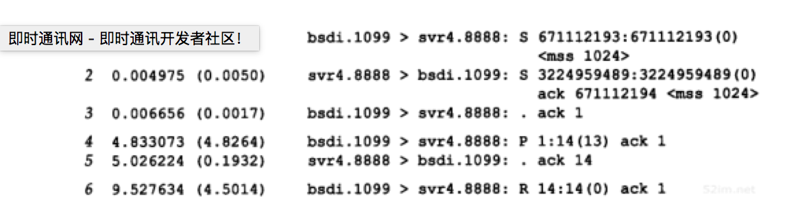
- 第1~3行：建立连接的正常过程
- 第4行：发送我们键入的数据行（12个字符和Unix换行符）
- 第5行：对收到数据的确认
- 第6行：终止客户程序而键入的文件结束符(Control_D)。由于指明使用异常关闭而不是正常关闭(-L0选项)，因此主机bsdi端的TCP发送一个 RST 而不是通常的FIN
- RST报文段：包含一个序号和确认序号
RST报文段不会导致另一端产生任何响应，另一端根本不进行确认 收到RST的一方将终止该连接，并通知应用层连接复位
在服务器上得到下面的差错信息：
svr4$ sock -s 8888 # 作为服务器运行进程，监听8888端口 hello, world # 这行是客户端发送的 read error: Reset connection by peer
这个服务器程序从网络中接收数据并将它接收的数据显示到其标准输出上。通常，从它的TCP上收到文件结束符后便将结束，但这里看到当收到RST时，它产生了一个差错。这个差错正是所期待的： 连接被对方复位了
检测半打开连接
如果一方已经关闭或异常终止连接而另一方却还不知道，将这样的TCP连接称为 半打开 的
任何一端的主机异常都可能导致发生这种情况。只要不打算在半打开连接上传输数据，仍处于连接状态的一方就不会检测另一方已经出现异常
半打开连接的另一个常见原因是 当客户主机突然掉电而不是正常的结束客户应用程序后再关机 。这可能发生在使用PC机作为telnet的客户主机上，例如，用户在一天工作结束时关闭PC机的电源。当关闭PC机电源时，如果已不再有要向服务器发送的数据，服务器将永远不知道客户程序已经消失了。当用户在第二天到来时，打开PC机，并启动新的Telnet客户程序，在服务器主机上会启动一个新的服务器程序。这样会导致服务器主机中产生许多半打开的TCP连接
能很容易地建立半打开连接。在bsdi上运行telnet客户程序，通过它和svr4上的丢弃服务器建立连接。键入一行字符，然后通过tcpdump进行观察，接着断开服务器主机与以太网的电缆，并重启服务器主机。这可以模拟服务器主机出现异常（在重启服务器之前断开以太网电缆是为了防止它向打开的连接发送FIN，某些TCP在关机时会这么做）。服务器主机重启后，重新接上电缆，并从客户向服务器发送另一行字符。由于服务器的TCP已经重新启动，它将丢失复位前连接的所有信息，因此它不知道数据报文段中提到的连接。TCP的处理原则是接收方以复位作为应答：

图18-16是这个例子的tcpdump输出显示：
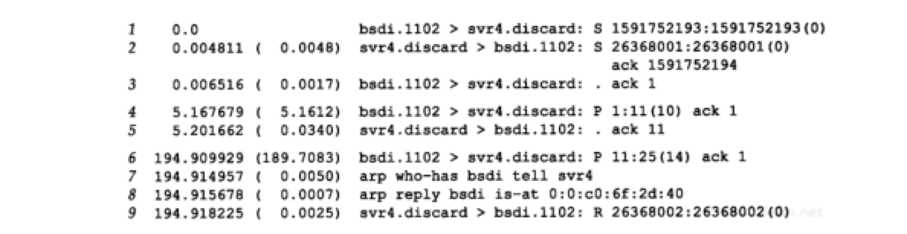
- 第1~3行：正常的连接建立过程
- 第4行：丢弃服务器发送字符行“hithere”
- 第5行：确认
- 断开svr4的以太网电缆，重新启动svr4，并重新接上电缆。这个过程几乎需要190秒
- 第6行：从客户端输入下一行（即“another line”），当键入回车键后，这一行被发往服务器。这将导致服务器产生一个响应
- 第7~8行：由于服务器主机经过重新启动，它的ARP高速缓存为空，因此需要一个ARP请求和应答
- 第9行：检测到半打开连接，服务器端发送RST给客户端。客户收到复位报文段后显示连接已被另一端的主机终止
同时打开
两个应用程序同时彼此执行主动打开的情况是可能的，尽管发生的可能性极小。每一方必须发送一个SYN，且这些SYN必须传递给对方。这需要每一方使用一个对方熟知的端口作为本地端口。这又称为 同时打开
例如，主机A中的一个应用程序使用本地端口7777，并与主机B的端口8888执行主动打开。主机B中的应用程序则使用本地端口8888，并与主机A的端口7777执行主动打开
这与下面的情况不同： 主机A中的telnet客户程序和主机B中telnet的服务器程序建立连接，与此同时，主机B中的telnet客户程序与主机A的telnet服务器程序也建立连接 这里两个telnet服务器都执行被动打开，而不是主动打开，并且telnet客户选择的本地端口不是另一端telnet服务器进程所熟悉的端口
TCP是特意设计为了可以处理同时打开，对于同时打开它 仅建立一条连接而不是两条连接 （其他的协议族，最突出的是OSI运输层，在这种情况下将建立两条连接而不是一条连接）
当出现同时打开的情况时，状态变迁与图18-13所示的不同。两端几乎在同时发送SYN，并进入SYN_SENT状态。当每一端收到SYN时，状态变为SYN_RCVD，同时它们都再发SYN并对收到的SYN进行确认。当双方都收到SYN及相应的ACK时，状态都变迁为ESTABLISHED。图18-17显示了这些状态变迁过程：
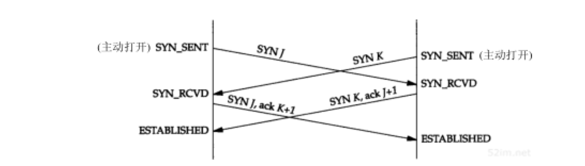
一个同时打开的连接需要交换4个报文段，比正常的三次握手多一个 。此外，要注意的是没有将任何一端称为客户或服务器，因为 每一端既是客户又是服务器
实例
尽管很难，但仍有可能产生一个同时打开的连接。两端必须几乎在同时启动，以便收到彼此的SYN。只要两端有较长的往返时间就能保证这一点。这样将一端设置在主机bsdi上，另一端则设置在主机vangogh.cs.berkeley.edu上。由于两端之间有一条拨号链路SLIP，它的往返时间对保证双方同步收到SYN是足够长的（几百毫秒）：
一端(bsdi)将本地端口设置为8888（使用命令行选项 -b ），并对另一端主机端口7777执行主动打开：
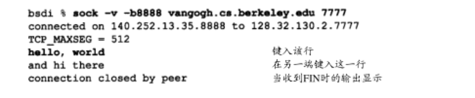
另一端也几乎在同一时间将本地端口设置为7777，并对端口8888执行主动打开：
带 -v 标志的sock程序来验证连接两端的IP地址和端口号。这个选项也显示每一端的MSS值。为证实两端确实在相互交谈，在每一端还输入一行字符，看它们是否会被送到另一端并显示出来。图18-18显示了这个连接的段交换过程：
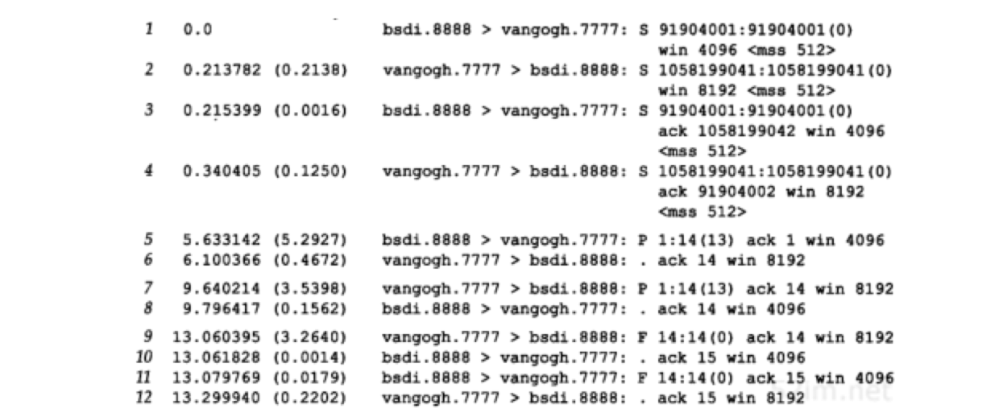
- 第1~2行：两个SYN
- 第3~4行：两个带ACK的SYN。它们将执行同时打开
- 第5行：由bsdi发送给vangogh的输入行“hello,world”
- 第6行：对此进行确认
- 第7~8行：另一方向的输入行“and hi there”和确认
- 第9~12行：显示正常的连接关闭
许多伯克利版的TCP实现都不能正确地支持同时打开。在这些系统中，如果能够进行SYN的同步接收，你将经历极多的报文段交换过程才能关闭它们 每个报文段交换过程包括每个方向上的一个SYN和一个ACK 图18-12中从SYN_SENT到状态SYN_RCVD的变迁在许多TCP实现中很少测试过
同时关闭
以前讨论过一方（通常但不总是客户方）发送第一个FIN执行主动关闭。双方都执行主动关闭也是可能的，TCP协议也允许这样的 同时关闭
在图18-12中，当应用层发出关闭命令时，两端均从ESTABLISHED变为FIN_WAIT_1。这将导致双方各发送一个FIN，两个FIN经过网络传送后分别到达另一端。收到FIN后，状态由FIN_WAIT_1变迁到CLOSING，并发送最后的ACK。当收到最后的ACK时，状态变化为TIME_WAIT。图18-19总结了这些状态的变化：
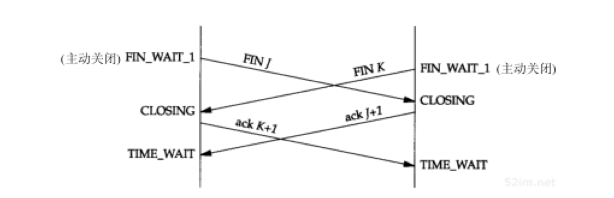
同时关闭与正常关闭使用的段交换数目相同
TCP选项
TCP首部可以包含选项部分。仅在最初的TCP规范中定义的选项是选项表结束、无操作和最大报文段长度。在例子中，几乎每个SYN报文段中都遇到过MSS选项
新的RFC，主要是RFC 1323定义了新的TCP选项，这些选项的大多数只在最新的TCP实现中才能见到。图18-20显示了当前TCP选项的格式，这些选项的定义出自于RFC 793和RFC 1323：
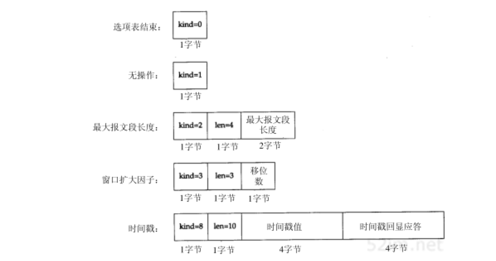
每个选项的开始是1字节kind字段，用来说明选项的类型：
- kind字段为0和1的选项：仅占1个字节
- 其他的选项：还有len字节。它说明的长度是指总长度，包括kind字节和len字节
设置无操作选项的原因： 允许发方填充字段为4字节的倍数 。如果使用4.4BSD系统进行初始化TCP连接，tcpdump将在初始的SYN上显示下面TCP选项：
<mss 512, nop, wscale 0, nop, nop, timestamp 146647 0> MSS选项设置为512，后面是NOP，接着是窗口扩大选项 第一个NOP用来将窗口扩大选项填充为4字节的边界。同样，10字节的时间戳选项放在两个NOP后，占12字节，同时使两个4字节的时间戳满足4字节边界
TCP服务器设计
大多数的TCP服务器进程是并发的。当一个新的连接请求到达服务器时，服务器接受这个请求，并调用一个新进程来处理这个新的客户请求。不同的操作系统使用不同的技术来调用新的服务器进程。在Unix系统下，常用的技术是使用fork函数来创建新的进程。如果系统支持，也可使用轻型进程，即线程
当一个服务器进程接受一来自客户进程的服务请求时是如何处理端口的？如果多个连接请求几乎同时到达会发生什么情况？
TCP服务器端口号
通过观察任何一个TCP服务器，可以了解TCP如何处理端口号。使用netstat命令来观察telnet服务器。下面是在没有telnet连接时的显示：
sun$ netstat -a -n -f inet
Active Internet Connections (including servers) Proto Recv-Q Send-Q Local-Address Foreign-Address State tcp 0 0 *.23 *.* LISTEN
- -a 标志显示网络中的所有主机端，而不仅仅是处于ESTABLISHED的主机端。 -n 标志将以点分十进制的形式显示IP地址，而不是通过DNS将地址转化为主机名，同时还要求显示端口号(23)而不是服务名称(telnet）。 -f inet 选项则仅要求显示使用TCP或UDP的主机
- 显示的本地地址为 * .23 ，星号通常又称为通配符。这表示传入的连接请求 SYN 将被任何一个本地接口所接收。如果该主机是多接口主机，将制定其中的一个IP地址为本地IP地址，并且只接收来自这个接口的连接。本地端口为 23 ，这是 telnet 的熟知端口号
- 远端地址显示为 . ，表示还不知道远端IP地址和端口号，因为该端还处于LISTEN状态，正等待连接请求的到达
现在在主机slip（140.252.13.65）启动一个telnet客户程序来连接这个telnet服务器。以下是netstat程序的输出行：
Active Internet Connections (including servers) Proto Recv-Q Send-Q Local-Address Foreign-Address State tcp 0 0 140.252.13.33.23 140.252.13.65.1029 ESTABLISHED tcp 0 0 *.23 *.* LISTEN
- 端口为23的第1行表示处于ESTABLISHED状态的连接。另外还显示了这个连接的本地IP地址、本地端口号、远端IP地址和远端端口号。本地IP地址为该连接请求到达的接口（以太网接口，140.252.13.33）
- 处于LISTEN状态的服务器进程仍然存在。这个服务器进程是当前telnet服务器用于接收其他的连接请求。当传入的连接请求到达并被接收时， 系统内核中的TCP模块就创建一个处于ESTABLISHED状态的进程
- 处于ESTABLISHED状态的连接的端口不会变化：也是23， 与处于LISTEN状态的进程相同
现在在主机slip上启动另一个telnet客户进程，并仍与这个telnet服务器进行连接。以下是netstat程序的输出行：
Active Internet Connections (including servers) Proto Recv-Q Send-Q Local-Address Foreign-Address State tcp 0 0 140.252.13.33.23 140.252.13.65.1030 ESTABLISHED tcp 0 0 140.252.13.33.23 140.252.13.65.1029 ESTABLISHED tcp 0 0 *.23 *.* LISTEN
- 现在有两条从相同主机到相同服务器的处于ESTABLISHED的连接。它们的本地端口号均为23。由于它们的远端端口号不同，这不会造成冲突。因为 每个telnet客户进程要使用一个外设端口，并且这个外设端口会选择为主机(slip)当前未曾使用的端口，因此它们的端口号肯定不同
- 再次重申TCP使用由本地地址和远端地址组成的4元组：目的IP地址、目的端口号、源IP地址和源端口号来处理传入的多个连接请求。 TCP仅通过目的端口号无法确定那个进程接收了一个连接请求
- 在三个使用端口23的进程中， 只有处于LISTEN的进程能够接收新的连接请求 。处于ESTABLISHED的进程将不能接收SYN报文段，而处于LISTEN的进程将不能接收数据报文段
最后从主机solaris上启动第3个Telnet客户进程，这个主机通过SLIP链路与主机sun相连，而不是以太网接口：
Active Internet Connections (including servers) Proto Recv-Q Send-Q Local-Address Foreign-Address State tcp 0 0 140.252.1.29.23 140.252.13.65.1031 ESTABLISHED tcp 0 0 140.252.13.33.23 140.252.13.65.1030 ESTABLISHED tcp 0 0 140.252.13.33.23 140.252.13.65.1029 ESTABLISHED tcp 0 0 *.23 *.* LISTEN
- 现在第一个ESTABLISHED连接的本地IP地址对应多地址主机sun中的SLIP链路接口地址(140.252.1.29)
限定的本地IP地址
现在来看下当服务器不能任选其本地IP地址而必须使用特定的IP地址时的情况。如果为sock程序指明一个IP地址（或主机名），并将它作为服务器，那么该IP地址就成为处于LISTEN服务器的本地IP地址。例如：
sun$ sock -s 140.252.1.29 8888
使这个服务器程序的连接仅局限于来自SLIP接口(140.252.1.29)。netstat的显示说明了这一点：
Active Internet Connections (including servers) Proto Recv-Q Send-Q Local-Address Foreign-Address State tcp 0 0 140.252.1.29.8888 *.* LISTEN
如果从主机solaris通过SLIP链路与这个服务器相连接，它将正常工作：
Active Internet Connections (including servers) Proto Recv-Q Send-Q Local-Address Foreign-Address State tcp 0 0 140.252.1.29.8888 140.252.1.32.34614 ESTABLISHED tcp 0 0 140.252.1.29.8888 *.* LISTEN
但如果试图从以太网(140.252.13)中的主机与这个服务器进行连接，连接请求将被TCP模块拒绝。如果使用tcpdump来观察这一切，对连接请求SYN的响应是一个如图所示的RST：
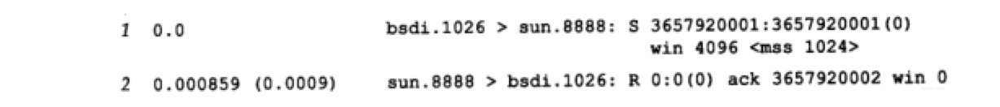
这个连接请求将不会到达服务器的应用程序，因为它根据应用程序中指定的本地IP地址被 内核中的TCP模块拒绝
限定的远端IP地址
UDP服务器通常在指定IP本地地址和本地端口外，还能指定远端IP地址和远端端口。RFC 793中显示的接口函数允许一个服务器在执行被动打开时，可指明远端插口（等待一个特定的客户执行主动打开），也可不指明远端插口（等待任何客户）
遗憾的是，大多数API都不支持这么做。 服务器必须不指明远端插口，而等待连接请求的到来，然后服务器程序自己检查客户端的IP地址和端口号
下表总结了TCP服务器进行连接时三种类型的地址绑定：
- lport: 服务器的熟知端口
- localIP: 必须是一个本地接口的IP地址
- 表中行的顺序正是TCP模块在收到一个连接请求时确定本地地址的顺序：
- 最常使用的绑定（第1行，如果支持的话）将最先尝试
- 最不常用的（最后一行两端的IP地址都没有制定）将最后尝试
| 本地地址 | 远端地址 | 描述 |
| localIP.lport | foreignIP.fport | 限制到一个客户进程（通常不支持） |
| localIP.lport | . | 限制为达到一个本地网络接口：localIP的连接 |
| *.lport | . | 接受发往lport的所有连接 |
呼入连接请求队列
一个并发服务器调用一个新的进程来处理每个客户请求，因此处于被动连接请求的服务器应该始终准备处理下一个呼入的连接请求。那正是使用并发服务器的根本原因。但仍有可能出现当服务器在创建一个新的进程时，或操作系统正忙于处理优先级更高的进程时，到达多个连接请求。当服务器正处于忙时，TCP是如何处理这些呼入的连接请求？
在伯克利的TCP实现中采用以下规则：
- 正等待连接请求的一端有一个固定长度的连接队列，该队列中的连接已被TCP接受（即三次握手已经完成），但还没有被应用层所接受
- TCP接受一个连接是 将其放入这个队列
- 应用层接受连接是 将其从该队列中移出
- 应用层将指明该队列的最大长度，这个值通常称为积压值。它的取值范围是 0~5 之间的整数，包括0和5
- 大多数的应用程序都将这个值说明为5
- 当一个连接请求（即SYN）到达时，TCP使用一个算法：根据当前连接队列中的连接数来确定是否接收这个连接。我们期望应用层说明的积压值为这一端点所能允许接受连接的最大数目，但情况不是那么简单
- 积压值：说明的是TCP监听的端点已被TCP接受而 等待应用层接受的最大连接数 。这个积压值 对系统所允许的最大连接数，或者并发服务器所能并发处理的客户数，并无影响
- Solaris系统：规定的值正如所期望的
- 传统的BSD系统：将这个值设置为积压值乘3除以2，再加1
- 积压值：说明的是TCP监听的端点已被TCP接受而 等待应用层接受的最大连接数 。这个积压值 对系统所允许的最大连接数，或者并发服务器所能并发处理的客户数，并无影响
- 如果对于新的连接请求，该TCP监听的端点的连接队列中还有空间，TCP模块将对SYN进行确认并完成连接的建立。但应用层只有在三次握手中的第三个报文段收到后才会知道这个新连接时。 + 当客户进程的主动打开成功但服务器的应用层还不知道这个新的连接时，它可能会认为服务器进程已经准备好接收数据了, 如果发生这种情况，服务器的TCP仅将接收的数据放入缓冲队列
- 如果对于新的连接请求，连接队列中已没有空间，TCP将不理会收到的SYN。也不发回任何报文段, 即不发回RST
- 如果应用层不能及时接受已被TCP接受的连接，这些连接可能占满整个连接队列， 客户的主动打开最终将超时
下表显示了积压值与传统的伯克利系统和Solaris2.2所能允许的最大接受连接数之间的关系：
|
积压值 |
最大排队的连接数 | |
| 传统BSD | Solrais2.2 | |
| 0 | 1 | 0 |
| 1 | 2 | 1 |
| 2 | 4 | 2 |
| 3 | 5 | 3 |
| 4 | 7 | 4 |
| 5 | 8 | 5 |
实例
通过sock程序能了解这种情况。使用新的选项 -O 来让它在创建一个新的服务器进程后而没有接受任何连接请求之前暂停下来。如果在它暂停期间又调用了多个客户进程，它将导致接受连接队列被填满，通过tcpdump能够看到这一切：
bsdi$ sock -s -v -q1 -O30 5555
- -q1 : 将服务器端的积压值置1。在这种情况下，传统的BSD系统中的队列允许接受两个连接请求
- -O30: 使程序在接受任何客户连接之前暂停30秒。在这30秒内，可启动其他客户进程来填充这个队列。在主机sun上启动4个客户进程
图18-24显示了tcpdump的输出：
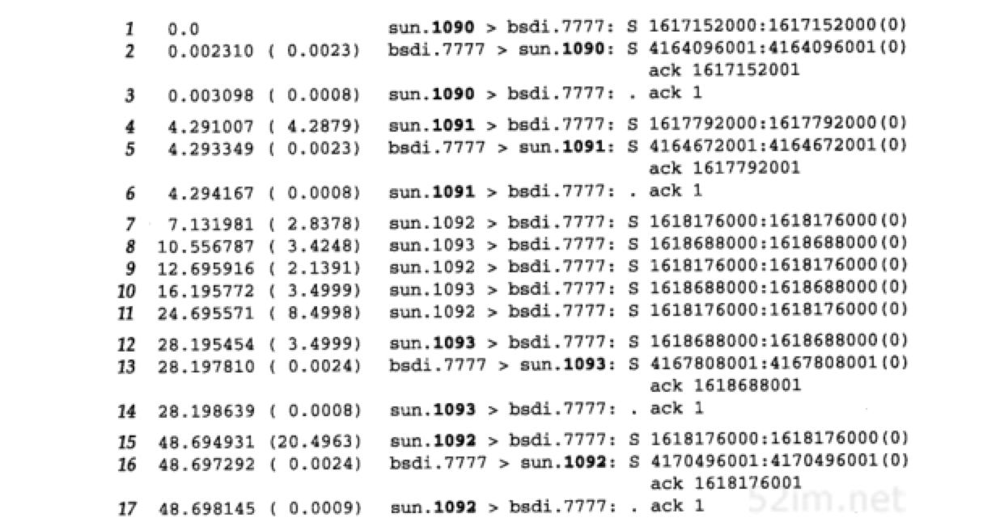
- 报文段1～3：端口为1090的第一个客户连接请求被TCP接受
- 报文段4～6：端口为1091的第2个客户连接请求也被TCP接受
- 服务器的应用仍处于休眠状态，还未接受任何连接。目前的一切工作都由内核中的TCP模块完成
- 两个客户进程已经成功地完成了它们的主动打开，因为它们建立连接的三次握手已经完成
- 报文段7：启动第3个客户进程，端口1092
- 报文段8：启动第4个客户进程，端口1093
- 由于服务器的连接队列已满，TCP将不理会两个SYN
- 这两个客户进程在报文段9,10,11,12,15重发它们的SYN
- 第4个客户进程的第3个SYN重传被接受了，因为服务器程序的30秒休眠结束后，它将已接受的两个连接从队列中移出，使连接队列变空
- 服务器程序接收连接的时间是28.19，小于30的原因在于启动服务器程序后它需要几秒的时间来启动第1个客户进程(报文段1，显示的就是启动时间)
- 报文段15～17：第3个客户进程的第4个SYN重传这时将被接受
服务器程序先接受第4个客户连接（端口1093）的原因是 服务器程序30秒休眠与客户程序重传之间的定时交互作用 ：
我们期望接收连接队列按先进先出顺序传递给应用层。如TCP接受了端口为1090和1091的连接，我们希望应用层先接受端口为1090的连接，然后再接受端口为1091的连接 但许多伯克利的TCP实现都出现按后进先出的传递顺序，这个错误已存在了多年。产商最近已开始改正这个错误，但在如SunOS 4.13等系统中仍存在这个问题
当队列已满时，TCP将不理会传入的SYN， 也不发回RST 作为应答，因为 这是一个软错误，而不是一个硬错误 。通常队列已满是由于应用程序或操作系统忙造成的，这样可防止应用程序对传入的连接进行服务。这个条件在一个很短的时间内可以改变。 但如果服务器的TCP以系统复位作为响应，客户进程的主动打开将被废弃 （如果服务器程序没有启动就会遇到）。由于不应答SYN， 服务器程序迫使客户TCP随后重传SYN ，以等待连接队列有空间接受新的连接
这个例子中有一个巧妙之处，这在大多TCP/IP的具体实现中都能见到，就是 如果服务器的连接队列未满时，TCP将接受传入的连接请求，但并不让应用层了解该连接源于何处（即不告知源IP地址和源端口） 。这不是TCP所要求的，而只是共同的实现技术：
如果一个API向应用程序提供了解连接请求的到来的方法，并允许应用程序选择是否接受连接 事实上当应用程序假定被告知连接请求已经到来时，TCP的三次握手已经结束！ 其他运输层的实现可能将连接请求的到达与接受分开（如OSI的运输层），但TCP不是这样 Solaris 2.2提供了一个选项使TCP只有在应用程序说可以接受（tcp_eager_listeners），才允许接受传入的连接请求
这种行为也意味着TCP服务器 无法使客户进程的主动打开失效 。当一个新的客户连接传递给服务器的应用程序时，TCP的三次握手就结束了，客户的主动打开已经完全成功。 如果服务器的应用程序此时看到客户的IP地址和端口号，并决定是否为该客户进行服务，服务器所能做的就是关闭连接（发送FIN），或者复位连接（发送RST） 。无论哪种情况，客户进程都认为一切正常，因为它的主动打开已经完成，并且已经向服务器程序发送过请求